QDE.
A system for composing real time computer graphics.
MTE7103 ‐ master thesis
- Student: Sven Osterwalder (ostes2@bfh.ch)
- Advisor: Prof. Clauder Fuhrer (claude.fuhrer@bfh.ch)
- Expert: Dr. Eric Dubuis (eric.dubuis@comet.ch)
- Date: 2017-08-15
Purpose
-
Modeling
-
Composing
-
Rendering
Motivation
Fascination rendering
No such solution
Related works
-
MTE7101
Rendering basics
-
MTE7102
Software architecture
Administrative aspects
Schedule
Meetings
Risk management
- Change methodology
- Reduce features
Fundamentals
Software architecture
- Components
- Relaxed layered architecture
- Model-view separation
Rendering
- Illumination models
- Ray- and sphere tracing
- Phong shading
Software architecture
Components
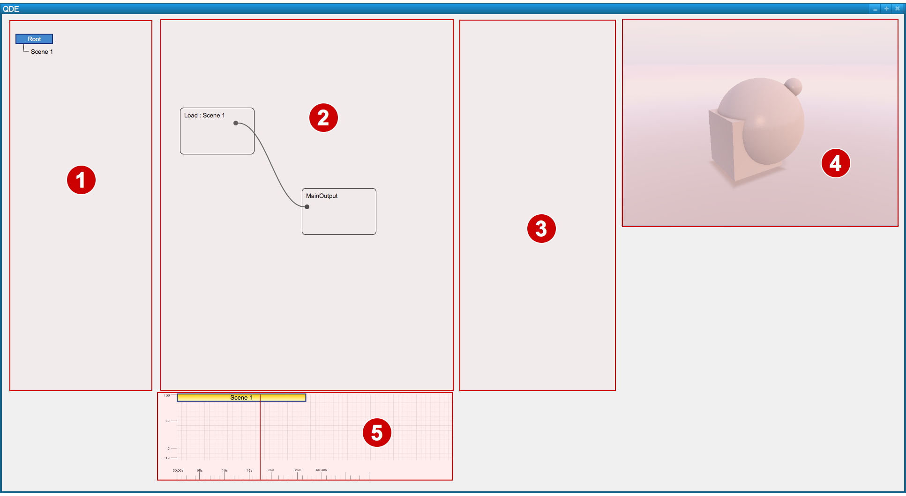
- 1 Scene tree
- 2 Node graph
- 3 Parameters
- 4 Render view
- 4 Timeline
Rendering
Implicit surfaces
-
$\Large f(\pmb{p}) = f(x, y, z) = 0$
Implicit surface (zero contour)
-
$\Large x \in \overset{\circ}{\pmb{A}} \Leftrightarrow f(\pmb{x}) < 0 $
In closed solid
-
$\Large x \in \partial{\pmb{A}} \Leftrightarrow f(\pmb{x}) = 0 $
On closed solid
-
$\Large x \in \mathbb{R}^{3} - \pmb{A} \Leftrightarrow f(\pmb{x}) > 0 $
Outside closed solid
Rendering
Geometrical implicit surfaces
-
$\Large \|\pmb{x}\| - 1 = 0$
Unit sphere, geometrical
-
$\Large f(\pmb{x}) = \|\pmb{x}\| - 1$
Implicit equation, common form
$ \|\pmb{x}\|$: ${(x^{2} + y^{2} + z^{2})}^{1 \over 2} $
(Euclidean metric)
Rendering
Distance functions and fields
-
$\Large A = \{ x : f(x) \leq 0 \}$
All points in A
-
$\large d(\pmb{x}, \pmb{A}) = \min_{\substack{\pmb{y} \in \pmb{A}}}(\|\pmb{x} - \pmb{y}\|) $
Point to set distance
-
$\Large |f(\pmb{x})| \leq d(\pmb{x}, f^{-1}(0)) $
Signed distance bound
$ \|\pmb{x}\|$: ${(x^{2} + y^{2} + z^{2})}^{1 \over 2} $
(Euclidean metric)
Rendering
Ray tracing
A. Appel, 1968; T. Whitted, 1979
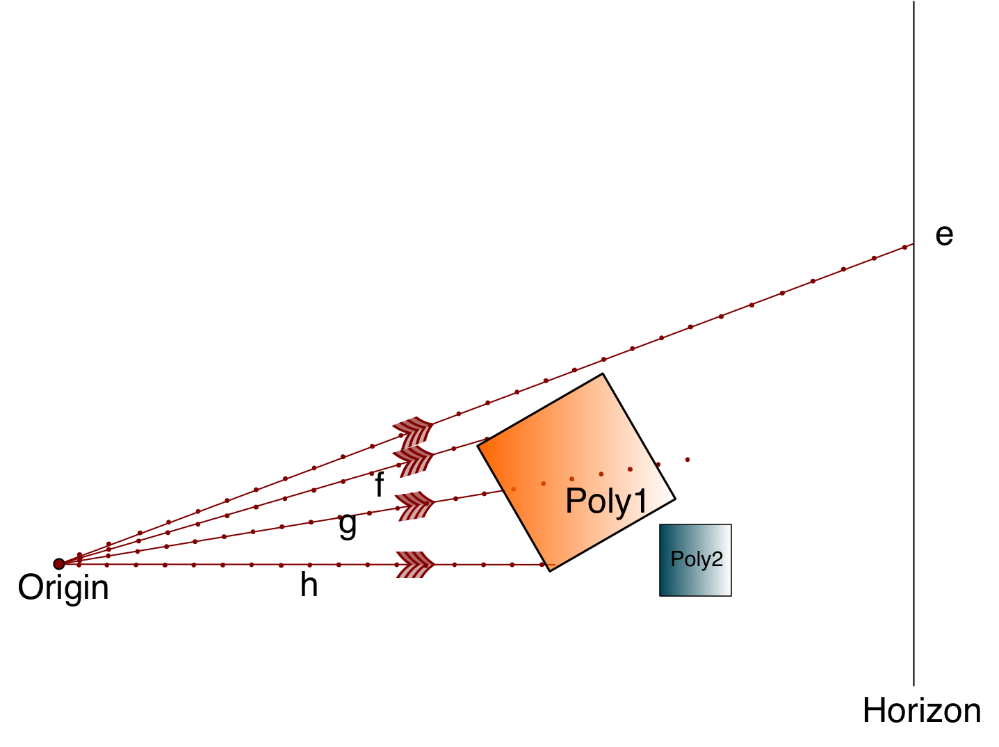
Rendering
Sphere tracing
J. C. Hart, 1994
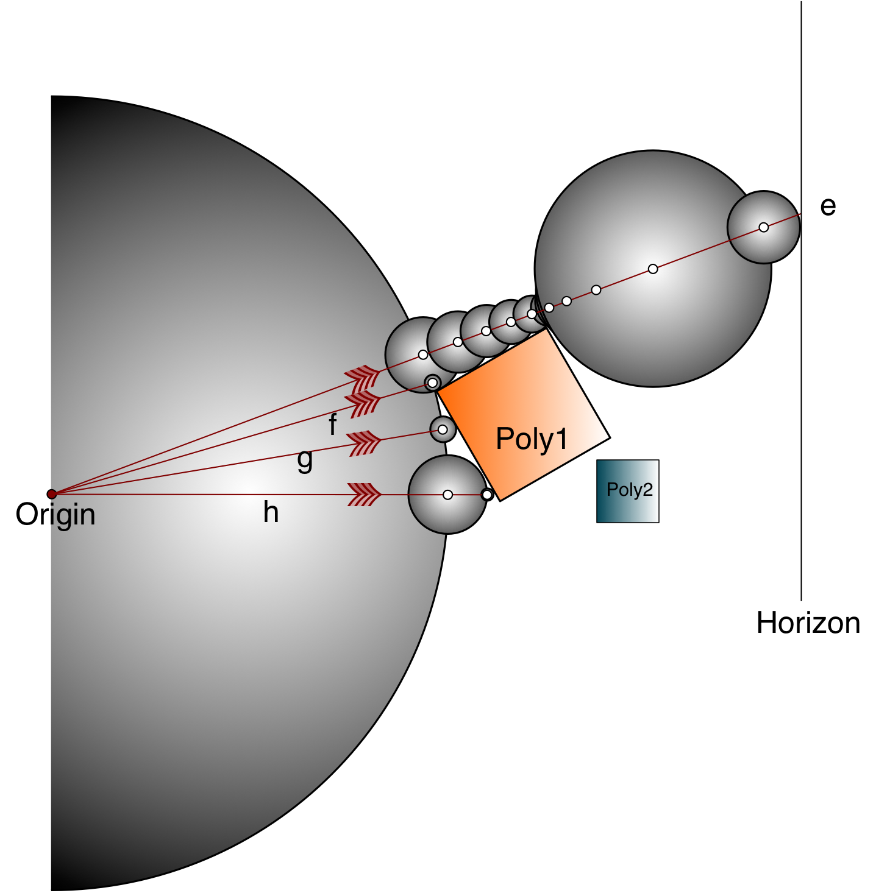
Rendering
Phong shading
Phong Bui-Thong, 1975
$\Large I(\overrightarrow{V}) = k_{a} \cdot L_{a} + \displaystyle\sum_{i} \cdot \bigg( k_{d} L_{i} \cdot ( \overrightarrow{S_{i}} \cdot \overrightarrow{N} ) + k_{s} L_{i} \cdot {( \overrightarrow{R_{i}} \cdot \overrightarrow{V} )}^{k_{e}} \bigg) $
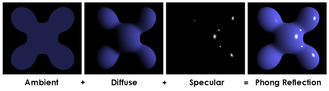Source: https://upload.wikimedia.org/wikipedia/commons/6/6b/Phong_components_version_4.png
Literate programming
Principle
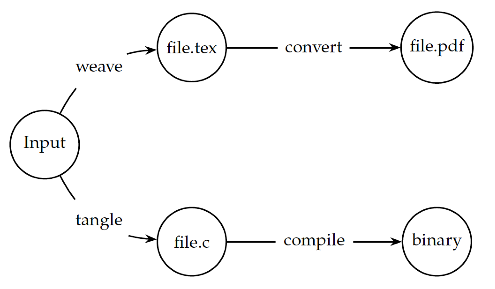
Literate programming
Example
-
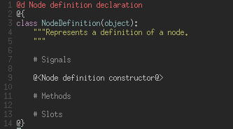 Nuweb source
-
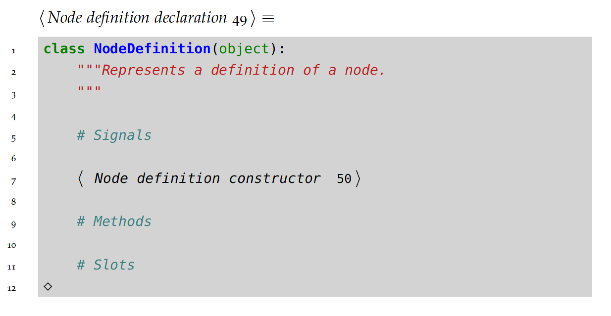 Documentation
-
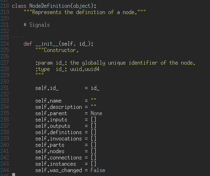 Source code
Software architecture
Components
Software design pattern
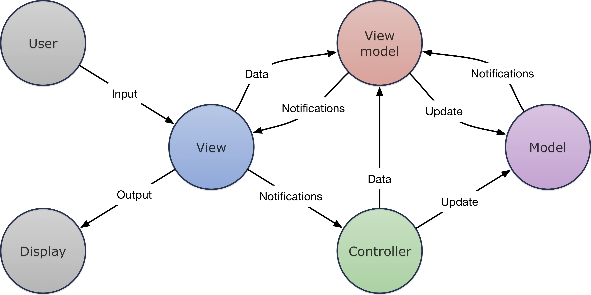
Software architecture
Components
Layers
-
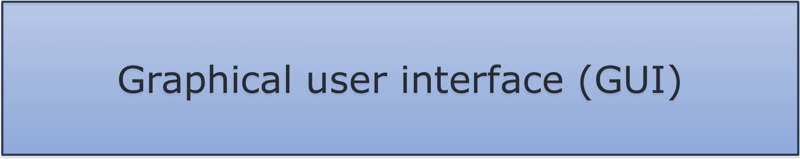
Views
Scene tree view
-
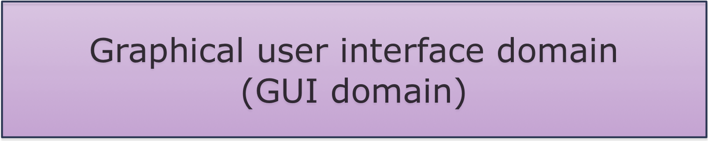
View models
Scenes, nodes
-
Controller (workflow objects)
Main application, node controller
-
Data models
Scene model, node model
-
Technical infrastructure
JSON parser, graphics, renderer
-

Basic elements, low level services
Colors, constants, logging
Software architecture
Components
Signals & slots
Literate programming
Challenges & solutions
Program
Overview
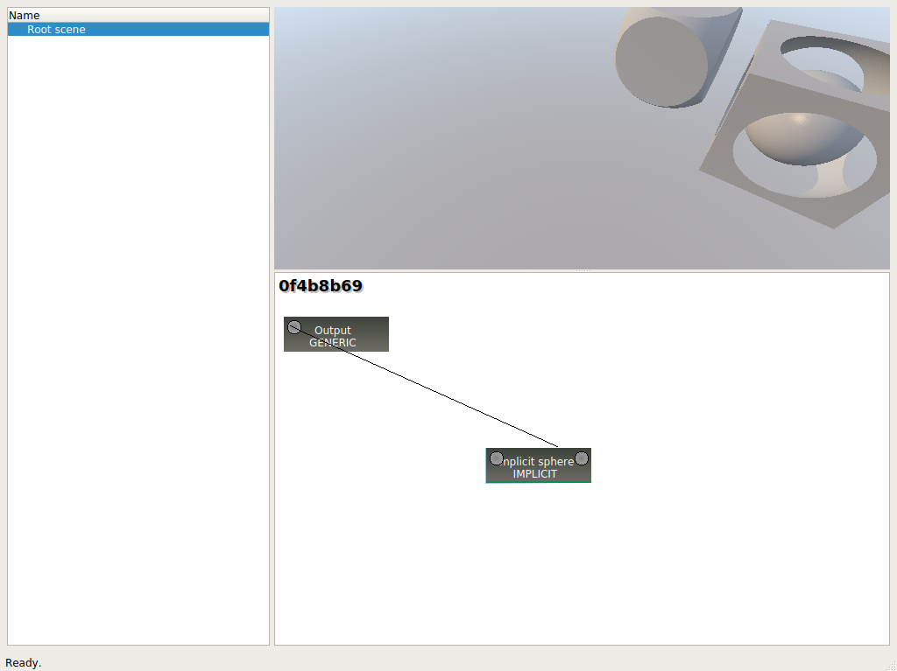
Program
Components
Nodes
-
01. ID
UUID, version 4
-
02. Name
Implicit sphere
-
03. Description
Renders an implicit sphere.
Program
Components
Nodes
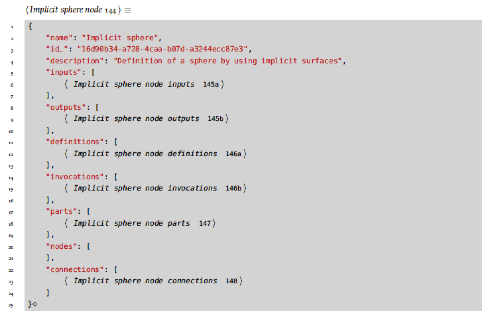
Program
Components
Nodes
-
04. Inputs
Parameters given to the node.
Either values or other nodes.
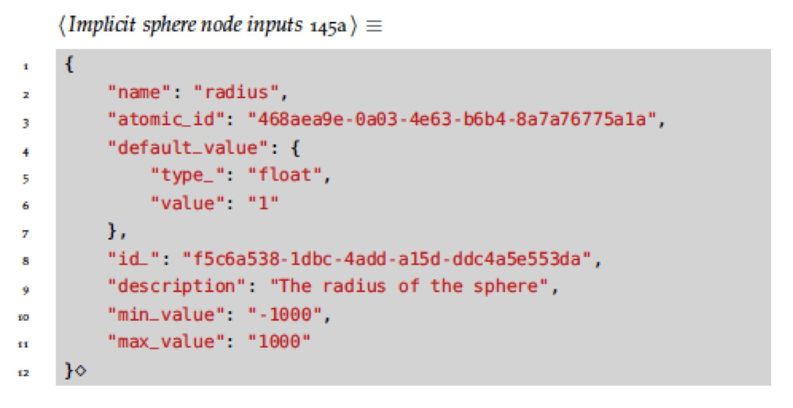 -
05. Outputs
Values delivered by the node.
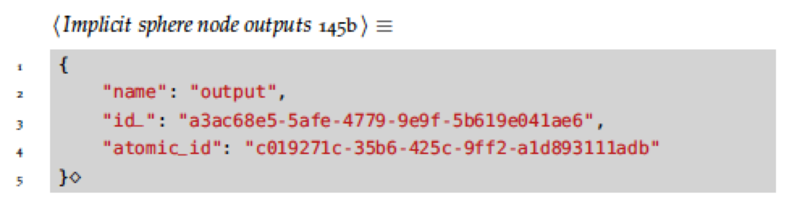
Program
Components
Nodes
-
06. Definitions
What the node defines.
Currently only GLSL functions.
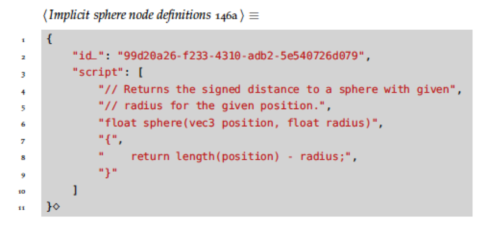 -
07. Invocations
Formats of a calls to definitions.
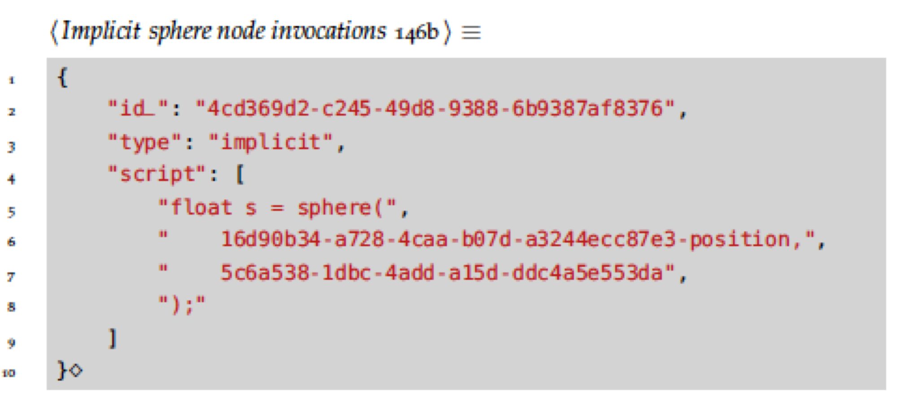 -
08. Parts
Processing of the node.
Directly interpreted code.
Program
Components
Nodes
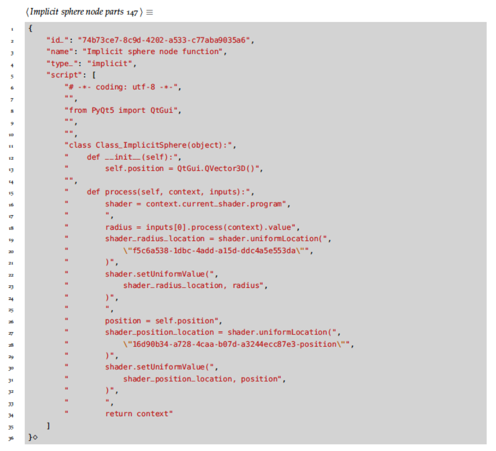
Program
Components
Nodes
-
09. Nodes
Children of the node.
-
10. Parameters
A list of inputs and outputs as tuples.
Program
Rendering
Pipeline
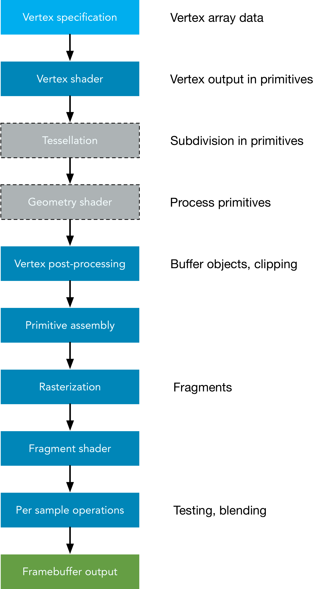
Source: khronos.org
Program
Rendering
Shaders in OpenGL
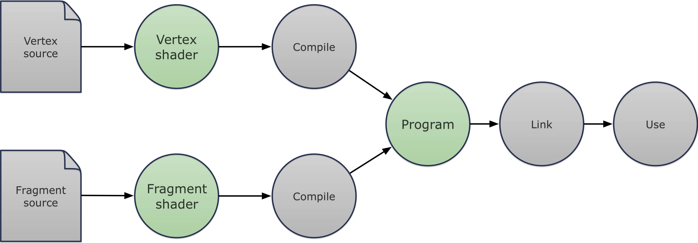
Source: khronos.org
Program
Rendering
Vertex shader
-
• 4 vertices
-
― 6 indices
Edges. -
◩ 2 triangles
Screen.
Program
Rendering
Fragment shader
// FRAGMENT SHADER #version 330 {{uniform_variables}} ... {{object_definitions}} ... // Defines the scene which will be drawn at given position. float scene(in vec3 position) { float result = 0.0; {{calls}} return result; }
Program
Rendering
Initialization
Program
Rendering
Add node
Program
Rendering
Connect node to non-root node
Program
Rendering
Connect node to root node
Conclusion
-
Idea
-
Literate programming
-
Literate programming
-
Program
QDE.
A system for composing real time computer graphics.
MTE7103 ‐ master thesis
- Student: Sven Osterwalder (ostes2@bfh.ch)
- Advisor: Prof. Clauder Fuhrer (claude.fuhrer@bfh.ch)
- Expert: Dr. Eric Dubuis (eric.dubuis@comet.ch)
- Date: 2017-08-15
Methodologies
Software development
Source: J. Shore and S. Warden, The Art of Agile Development.